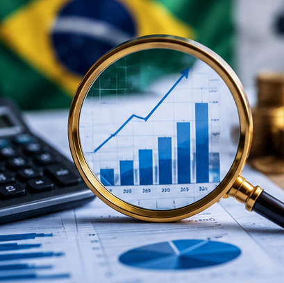
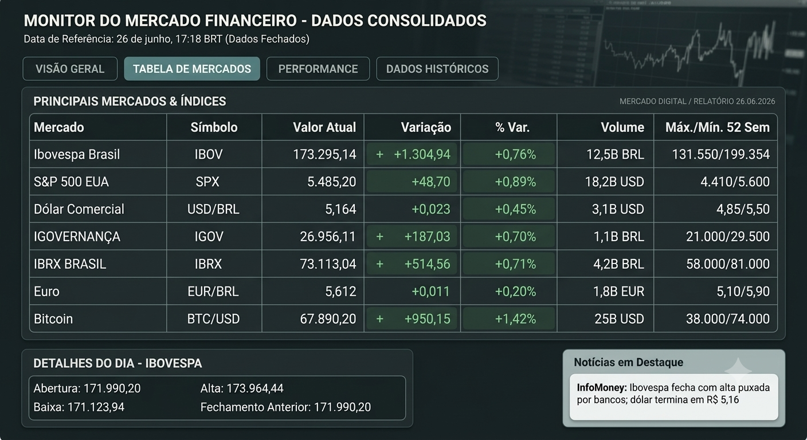

💸
Fraudes Financeiras
Golpes do falso boleto e do Pix agendado cresceram 25% no último trimestre. Os bancos reforçaram alertas de segurança.
Ler mais →Good morning, Brasil.
Nada como começar o dia sabendo exatamente para onde está indo o seu dinheiro — e como proteger o seu bolso dos sustos do cotidiano. Da mesa do café aos boletos que chegam sem aviso, hoje o foco é total na economia do seu bolso. Aqui está o seu The News Money de hoje.

As notícias mais importantes em menos de um minuto.
Golpes do falso boleto e do Pix agendado cresceram 25% no último trimestre. Os bancos reforçaram alertas de segurança.
Ler mais →A safra recorde reduziu os preços do arroz e do feijão no atacado. O consumidor ainda aguarda queda nos supermercados.
Ler mais →A Aneel confirmou bandeira verde. As famílias devem sentir uma pequena redução na conta de energia.
Ler mais →Novas metas prometem bilhões em investimentos, mas capitais poderão revisar suas tarifas.
Ler mais →No meio de tanta notícia financeira, uma pausa para o esporte. A Seleção Brasileira garantiu sua classificação na fase de grupos da Copa do Mundo de 2026 após vencer a Escócia por 3 a 0. Enquanto milhões comemoram o resultado dentro de campo, o mercado já projeta um aumento nas vendas do varejo, turismo e streaming durante a competição.
Controlar o orçamento doméstico virou uma verdadeira arte. Entre a oscilação dos alimentos e as tarifas de serviços públicos, o brasileiro precisa recalcular sua rota financeira praticamente toda semana.
O setor de alimentação apresenta sinais mistos. Enquanto as commodities agrícolas deram uma leve folga internacionalmente, os custos de transporte e logística continuam pressionando os preços de frutas, verduras e legumes.
A melhor notícia vem da energia elétrica. Com reservatórios em níveis confortáveis, a necessidade de acionar usinas térmicas diminuiu. Especialistas recomendam aproveitar a economia para fortalecer a reserva de emergência.
Reduzir gastos impulsivos e investir regularmente continua sendo uma das principais recomendações dos planejadores financeiros.

Com a temporada de seca, o volume das hidrelétricas diminui. O país depende mais das termelétricas, que possuem custo maior de geração.
Evitar desperdícios com chuveiro elétrico, ar-condicionado e iluminação continua sendo a forma mais eficiente de economizar.
Agências reguladoras iniciam revisões dos contratos de saneamento. Algumas capitais poderão registrar reajustes localizados.
Juros elevados e fatores climáticos continuam pressionando os alimentos básicos em diversas regiões do país.
Se antes as fraudes dependiam de ligações telefônicas convincentes, hoje o cenário envolve engenharia social avançada, inteligência artificial e cópias quase perfeitas de aplicativos.
O alvo mudou. Os criminosos passaram a explorar aplicativos de entrega, comércio eletrônico e bancos digitais para alterar chaves Pix durante pagamentos.
O golpe normalmente começa com uma falsa notificação informando erro na entrega ou necessidade de estorno. Ao acessar o link, programas maliciosos modificam silenciosamente o destinatário do Pix.
Banco Central e Polícia Federal intensificaram o combate às chamadas "contas de passagem", utilizadas apenas para ocultar o destino final do dinheiro.
✔ Nunca clique em links enviados por SMS ou WhatsApp. ✔ Sempre confirme o nome do destinatário antes de concluir um Pix. ✔ Desconfie de pedidos urgentes de pagamento.
A economia doméstica continua sendo influenciada principalmente por inflação, juros elevados, consumo das famílias e investimentos em infraestrutura.
Especialistas reforçam que organizar o orçamento, criar uma reserva financeira e evitar golpes digitais são medidas fundamentais para enfrentar um cenário econômico cada vez mais conectado e dinâmico.
Confira os principais indicadores e acontecimentos que movimentaram a economia nesta semana.
O principal índice da Bolsa brasileira encerrou a semana aos 173.295 pontos, impulsionado pelas ações do setor bancário e pela ata do Copom.
A moeda americana perdeu força após novos dados de inflação nos Estados Unidos.
Os papéis da empresa recuaram após notícias envolvendo proteção contra credores.


Os investimentos em IA cresceram 39% no setor bancário.
Os bancos devem investir cerca de R$ 3,9 bilhões em infraestrutura em nuvem.
O orçamento de tecnologia do setor deve atingir R$ 50,4 bilhões em 2026.
A Copa do Mundo de 2026 pode gerar até US$ 71 bilhões na economia mundial.
No Brasil, varejo, turismo, streaming, bares e restaurantes esperam crescimento nas vendas durante o torneio.
Novo edital destina R$ 3 milhões para projetos de economia solidária na Rede Federal.
Estudos apontam retorno financeiro e social para comunidades que ampliam investimentos em educação.
Os principais números da economia brasileira atualizados para você.
Menor taxa histórica para o período desde 2012.
População ocupada bate novo recorde.
Crescimento real anual de aproximadamente 4%.
Menor índice já registrado pelo IBGE.
Divulgação da ata da última reunião do Banco Central.
PMI Industrial EUAPrévia da inflação brasileira.
PIB dos Estados UnidosDivulgação da taxa de desemprego.
Mercado de Trabalho